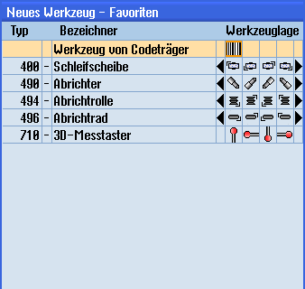

In der Favoritenliste steht bei Codeträgeranbindung zusätzlich ein Werkzeug zur Verfügung.

Neues Werkzeug von Codeträger in der Liste der Favoriten
Neues Werkzeug von Codeträger anlegen
 | 1. | Die Werkzeugliste ist geöffnet. |
| | 2. | Positionieren Sie den Cursor in der Werkzeugliste an die Position, an der das Werkzeug angelegt werden soll. Sie können dabei einen leeren Magazinplatz oder auch den NC-Werkzeugspeicher außerhalb des Magazins wählen. Im Bereich des NC-Werkzeugspeichers können Sie den Cursor auch auf ein vorhandenes Werkzeug setzen. Die Daten des angezeigten Werkzeugs werden nicht überschrieben. |
 | 3. | Drücken Sie den Softkey "Neues Werkzeug". |
 | | Das Fenster "Neues Werkzeug – Favoriten" wird geöffnet. |
 | 4. | Positionieren Sie den Cursor auf den Eintrag "Werkzeug von Codeträger" und drücken Sie den Softkey "OK". Die Daten des Werkzeugs vom Codeträger werden gelesen und im Fenster "Neues Werkzeug" mit Werkzeugtyp, Werkzeugnamen und evtl. mit bestimmten Parametern angezeigt. |
| 5. | Drücken Sie den Softkey "OK". Das Werkzeug wird mit dem vorgegebenen Namen in die Werkzeugliste übernommen. Befindet sich der Cursor in der Werkzeugliste auf einem leeren Magazinplatz, wird das Werkzeug auf diesen Magazinplatz beladen. |
Werkzeug auf Codeträger entladen
| | 1. | Die Werkzeugliste ist geöffnet. |
 | 2. | Positionieren Sie den Cursor auf das Werkzeug, das Sie aus dem Magazin entladen möchten und drücken Sie die Softkeys "Entladen" und "Auf Codeträger". Das Werkzeug wird entladen und die Daten des Werkzeugs werden anschließend auf den Codeträger geschrieben. |
Nach entsprechender Einstellung wird das entladene Werkzeug auf Codeträger nach dem Auslesen auf den Codeträger aus dem NC-Speicher gelöscht.
Werkzeug auf Codeträger löschen
| | 1. | Die Werkzeugliste ist geöffnet. |
| | 2. | Positionieren Sie den Cursor auf das Werkzeug auf Codeträger, das Sie löschen wollen. |
| | 3. | Drücken Sie die Softkeys "Werkzeug löschen" und "Auf Codeträger". Das Werkzeug wird entladen und die Daten des Werkzeugs werden auf den Codeträger geschrieben. Anschließend wird das Werkzeug aus dem NC-Speicher gelöscht. |
Das Löschen des Werkzeugs kann anders eingestellt sein, d.h. der Softkey "Auf Codeträger" steht nicht zur Verfügung.